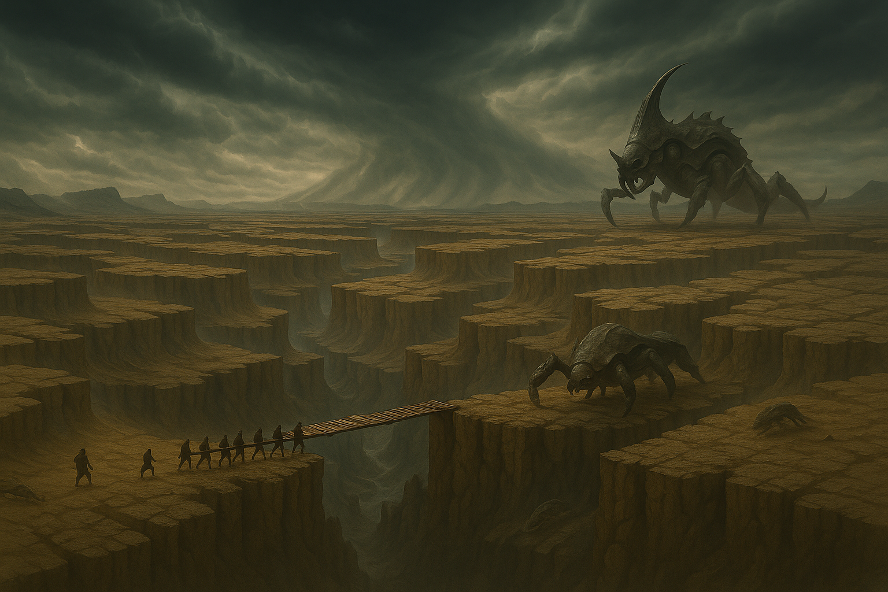

I chose The Way of Kings by Brandon Sanderson as my ISU novel simply because I've been looking for an excuse to read it. I have loved all of the Brandon Sanderson books that I have read and for a while have been wanting to dig into the stormlight archives.
This book is part of what will eventually become a ten part epic, all expected to be over 1000 pages each. This book has an extensive magic system that you learn slowly along the way, complex sciences, politics, war, and so many other things. Unlike some of Sanderson's other works, this series takes place on an entire continent, not just a city or country. So you get to learn about more than one culture, and the way that their differences cause conflict. This book has undoubtedly my favourite character of all time, Kaladin. A character with such an amazing story of growth and redemption. Reading this book is worth it just for his story alone, and you get other stories at the same time.

This book follows 5 characters, Kaladin: a once soldier sold into slavery, fighting himself to not lose hope or purpose. Dalinar, high prince of the Alethi, Brightlord of his armies, rumors spread of his madness, as he tries to follow the ways of his passed brother. Adolin: Son of Dalinar, unable to stand by and hear soldiers spread rumours of his father's madness, hot headed and wanting to duel anyone for anything. A Boy who needs to learn to be a man. Shallan: A girl from a collapsing brighteyes dynasty, pretending to be a scholar so she can steal the one thing her family needs to survive. And Szeth, the mysterious assassin that started the war 7 years ago, when he killed High King Gavilar of the Alethi, Dalinar’s brother. An assassin controlled by a rock.
I know what you are thinking, 1300 pages is wayyyyy too many. I normally agree, but this book does not feel like it's over 1000 pages long. You will not want to put it down, and you will be entranced by the growth and narratives of these characters.

This book takes place in the midst of a very strange war between the Alethi and the Parshendi. A war between a tiny nation and a fragmented one, with the rest of the continent standing by. A world abandoned by the knights radiant. A world with moral codes completely forgotten. A continent on the brink of the bloodiest war of all time. The highstorms are getting worse, something is coming, and nobody is ready.